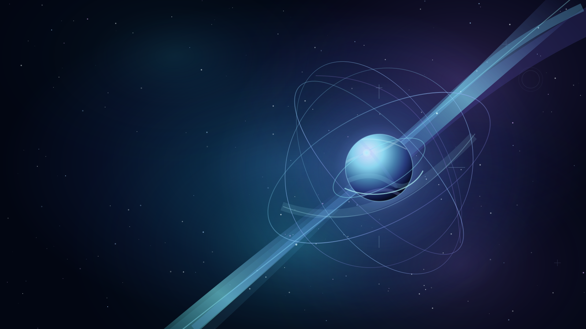

W kosmosie coś odmierza czas.
W 1967 roku z nieznanego źródła nadchodził sygnał tak regularny, że przez chwilę trudno było uwierzyć, iż stworzyła go natura. Tak zaczęła się historia pulsarów.
WSZYSTKO ZACZĘŁO SIĘ OD CZEGOŚ, CO WYGLĄDAŁO JAK ZAKŁÓCENIE
Wśród kilometrów szumu ukrywała się nowa klasa gwiazd.
Jocelyn Bell, doktorantka Uniwersytetu Cambridge, analizowała w 1967 roku papierowe zapisy radioteleskopu. Aparatura miała pomagać w badaniu odległych kwazarów, a papier z rejestratora pokrywał się pozornie chaotycznymi liniami. Na jednej z taśm Bell dostrzegła niepozorny, powtarzający się ślad. Nie przypominał zwykłego szumu.
W sierpniu zauważyła pierwszą anomalię. Zwracała uwagę, że sygnał wracał z tego samego rejonu nieba, zgodnie z rytmem gwiazd, a nie ziemskiego zegara. Trzeba było wykluczyć zakłócenia radiowe, usterki i sygnały pochodzenia ludzkiego. Szybszy zapis z 28 listopada 1967 roku pokazał coś zdumiewającego: regularny ciąg impulsów, jeden co około 1,337 sekundy. [1, 2]
Na chwilę pojawiła się nawet żartobliwa nazwa LGM — od angielskiego „Little Green Men”. Nie chodziło o dowód istnienia obcych, lecz o to, jak zagadkowe wydawało się zjawisko. Wkrótce odnaleziono kolejne źródła. W lutym 1968 roku zespół ogłosił odkrycie nowego rodzaju obiektu astronomicznego. [2]
ZAGADKA MA ROZWIĄZANIE
Gwiazda nie musi gasnąć i rozbłyskać. Wystarczy, że się obraca.
Gdy masywna gwiazda kończy życie w wybuchu supernowej, w pewnych warunkach pozostawia po sobie niezwykle gęste jądro: gwiazdę neutronową. Obiekt o średnicy rzędu kilkudziesięciu kilometrów może mieć masę porównywalną z masą Słońca lub większą. To materia w warunkach, których nie potrafimy odtworzyć w laboratorium na Ziemi.
Gwiazda neutronowa może szybko wirować i mieć niezwykle silne pole magnetyczne. Jeżeli kierunek osi magnetycznej nie pokrywa się z osią obrotu, obszary emisji omiatają przestrzeń. Obserwator odbiera impulsy tylko wtedy, gdy promieniowanie dociera w jego stronę. Nie jest to więc koniecznie pulsowanie całego obiektu, lecz pulsowanie sygnału widzianego z konkretnego kierunku. [3]
Oś obrotu
Wyznacza kierunek, wokół którego wiruje gwiazda.
Oś magnetyczna
Może być nachylona względem osi obrotu.
Linia widzenia
Decyduje, czy obserwator znajdzie się na drodze promieniowania.
Ważne: świecące stożki w symulatorze są umownym sposobem pokazania kierunku emisji. Fal radiowych nie zobaczylibyśmy gołym okiem jako świetlnych reflektorów. Rzeczywista magnetosfera pulsara jest znacznie bardziej złożona.
To nie Wszechświat mruga do nas. To my znajdujemy się na drodze jego światła.
Światła w znaczeniu promieniowania elektromagnetycznego — niekoniecznie widzialnego.PULSAR NIE JEST TYLKO WZOREM NA WYKRESIE
W sercu Mgławicy Kraba tyka jeden z najsłynniejszych pulsarów.
W 1054 roku obserwatorzy nieba odnotowali pojawienie się niezwykle jasnej „nowej gwiazdy”. Dziś wiemy, że w tym rejonie Byka znajduje się pozostałość po supernowej — Mgławica Kraba, oznaczana także jako M1. Jej centrum zasila pulsar wykonujący około 30 obrotów na sekundę: pełen obrót trwa mniej więcej 33 milisekundy. [4]

Jasny punkt w centrum to gwiazda neutronowa; rozświetlone struktury wokół niej pokazują oddziaływanie energetycznych cząstek z otoczeniem. Barwy zdjęcia są przypisane do danych rentgenowskich, nie odpowiadają temu, co zobaczyłoby ludzkie oko.
Źródło i autorstwo: NASA/CXC/SAO/F. Seward i in. · zobacz opis obserwacji.Nie wszystkie pulsary wysyłają sygnał wykrywalny z Ziemi. Nie wszystkie obserwujemy tylko w falach radiowych: wiele badamy również w promieniowaniu rentgenowskim i gamma. Wrażliwa aparatura pozwala wykorzystywać regularność impulsów do sprawdzania zachowania ekstremalnej materii, precyzyjnych pomiarów czasu, a nawet badań nad nawigacją w przestrzeni kosmicznej. [3, 5]
PRZECZYTAŁEŚ HISTORIĘ. TERAZ PRZEJMIJ STEROWANIE.
Czy potrafisz odnaleźć impuls?
Za chwilę uruchomisz uproszczony model rotującej gwiazdy neutronowej. Zanim poruszysz suwaki, spróbuj przewidzieć wynik trzech prób:
Złap wiązkę
Ustaw kąt obserwatora ζ blisko nachylenia osi magnetycznej α. Sprawdź, jak zmienia się odbiór.
Odnajdź ciszę
Wybierz „Radiowa cisza”. Czy pulsar przestaje istnieć — czy tylko wiązka omija teleskop?
Zmierz czas
Wybierz wariant 5 ms i spróbuj odzyskać okres z zaszumionego sygnału odbiornika.
Laboratorium generuje dane syntetyczne. Model opisuje geometrię widzenia i okresowość, ale nie oblicza pełnej fizyki magnetosfery ani rzeczywistej emisji radiowej.